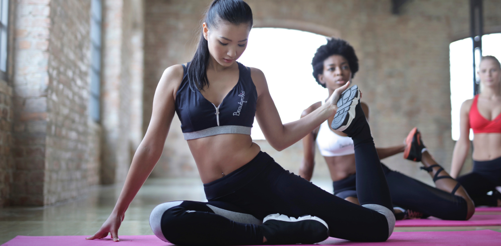

5 Reasons Why Yoga is So Good For You:
1. Lowers stress and improves your mood
Some yoga methods use specific meditation techniques, which focus the mind on your breathing to quieten the constant ‘mind chatter’, relieves stress and allow you to feel relaxed. Practising these breathing techniques on a yoga and meditation retreat can also boost oxygen levels to the brain, leaving you feeling happier and more content with everyday life.
2. Boosts confidence
SoAside from the uplifting spiritual values, the act of meditation can actually boost your confidence. The process works by releasing tension from your mind, so that you can feel confident about your physical body. Without any forms of anxiety, you are able to establish an internal connection with yourself. This is consequently reflected in your perception of others and will help to better your relationships by improving compassion and awareness.
3. Lowers the risk of injury
Exercise such as running is usually a series of rapid, forceful movements, which means that effort is at a maximum and there is a higher risk of injury and increased muscle tension. Often, strenuous exercise also engages an imbalance of opposing muscle groups, whereas yoga concentrates on balancing this activity. Unite your body and mind on a yoga and fitness holiday which will allow to combine more intense workouts with low-impact yoga.
4. Helps you lose weight
Being overweight is a sign that there are imbalances in your everyday life and one major contributor to weight gain is excess stress. Practising yoga enables you to bring a deep sense of relaxation to your body and your mind, helping you to de-stress and allowing you to lose weight naturally.
5. Increases flexibility
People often say that they are not flexible enough to do yoga. The truth is, it doesn’t matter how tight your muscles are as yoga asanas works by safely stretching your muscles and help you to practise it further. Moreover, yoga also stretches other soft tissue in the body such as ligaments and tendons, increasing the range of motion in the joints and allowing you to move around more freely.